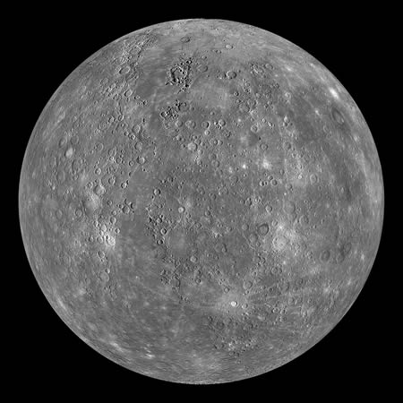

水星是太阳系的八大行星中最小和最靠近太阳的行星，但有着八大行星中最大的离心率，轨道周期是87.969 地球日。从地球上看，它大约116天左右与地球会合一次，公转速度远远超过太阳系的其它星球。水星的快速运动使它在罗马神话中被称为墨丘利，是快速飞行的信使神。由于大气层极为稀薄，无法有效保存热量，水星表面昼夜温差极大，为太阳系行星之最。白天时赤道地区温度可达430°C，夜间可降至-170°C。极区气温则终年维持在-170°C以下。水星的轴倾斜是太阳系所有行星中最小的（大约1�6�830度），但它有最大的轨道偏心率。水星在远日点的距离大约是在近日点的1.5倍。水星表面充满了大大小小的坑穴（环形山），外观看起来与月球相似，显示它的地质在数十亿年来都处于非活动状态。